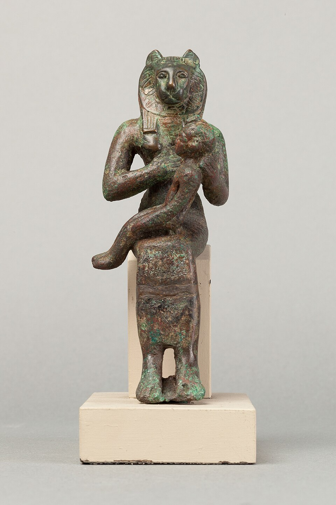

Уаджит — «Зелёная» — кобра, чьё имя стало словом для всей нижней половины Египта: «дом Уаджит» — это Дельта. Её святилище — Перу-нефер («Прекрасный дом») в городе Буто, одном из древнейших городов страны, где её оракул вещал за две с половиной тысячи лет — от первых фараонов до греков. Она — царский урей: та самая кобра, что сидит на лбу двойной короны и «жжёт врагов царя».
Её стихия — огнь очищающий. Уаджит — «огненный глаз Ра»: око, которое солнце посылает на землю карать людей. В мифе о разрушении человечества глаз летит львицей, пьёт кровь — и возвращается к отцу насыщенный; в этом гневе он Сехмет, а в возвращении и кротости — Уаджит и Хатор. Гнев и нежность — две стороны одной змеи.
Кормилица в топях
Когда Исида спрятала младенца Хора в зарослях Хеммиса дельты, Уаджит свернулась под ребёнком и кормила его своим ядом-молоком: «я — его мать, кормящая его». Отсюда её роль — тайная защитница: её не зовут в храм, она уже там, где ребёнок. Амулеты-уреи клали к ногам мумии — «Огонь, иди перед ним».
Две владычицы
Вместе с Нехбет стервятницей они — «Две Владычицы» (Небти): вторая строка царского имени с древнейших времён. Уаджит — над Красной короной Нижнего Египта, Нехбет — над Белой Верхнего. Фараон правит, пока обе кобры над его челом: они «произносят его имя» перед богами. На саркофаге Тутанх-Амуна обе змеи смотрят с золотой короны — и урей, и стервятник.
Зелёный глаз
Слово «уаджит» значит также «целый, здоровый» — и им называют исцелённый глаз Хора, отданный в борьбу с Сетом и возвращённый отцом. Амулет «уаджит» — разрезанный глаз с бровью и завитком — это и око Хора, и змея: зрение как здоровье и защита. Его носили живые, его кладут мёртвым — формула «да будет цел глаз твой» звучала на каждой мумии.
Праздники
- «Возлияния Уаджит» — в первый день Нового года (1 Тот) в её храме лили вино и пели: «напой Владычицу, отврати гнев» — мирная замена глаз-истребительницы.
- «Смерть Уаджит» и «Воскресение Уаджит» — старый лунный календарь Дельты; с этими датами сживались рыбаки и земледельцы топей.
- В Буто оракул отвечал движением священной ладьи; к ней ездили за ответами царицы и птолемеевские наместники.
Интересные факты
- Имя Уаджит дало название и году: «год счисления Уаджит» — старый способ помечать датировки по её храмовому календарю.
- На палетке Нармера (ок. 3100 до н.э.) голова-урей уже — знак Нижнего Египта: богине четыре с половиной тысячи лет в том же образе.
- «Змеиная кровь» в лексиконе жрецов — и яд, и благословение: один термин для того, что убивает и что защищает.
- В греко-римские времена её звали «Уто» и «Селкенет» соседних культов смешивали с ней — кобра стала общесредиземноморской охранительницей домов.